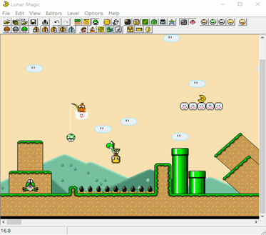
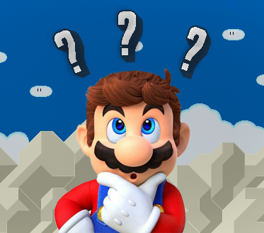
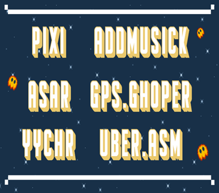

¿Que es Lunar Magic?
Lunar magic es una herramienta creada por Fusoya alla por el año 2000 para poder Editar y re-armar Tu propio juego de SMW. El editor tiene una interface muy facil de usar y es completamente versatil en cuanto a las necesidades del usuario, aunque es necesario para ciertas acciones utilizar herramientas complementarias. Si quieres puedes descargarlo de la seccion herramientas!
¿Por donde empiezo?
Lo primero que necesitas es descargar Lunar Magic para poder empezar a crear tu propio rom hack, luego debes tener un rom del juego Original version USA (el mismo por cuestiones legales no se puede obtener aqui pero puedes buscarlo en google), aparte de esto se recomienda tener los siguientes programas complementarios (addMusick, Pixi, GPS.Ghoper y Asar) estos te permitiran insertar diferentes cosas tales como: musica, sprites, bloques y parches; Y por ultimo mucho tiempo libre para crear lo que gustes, desde kaizo (principiante, intermedio y experto) o estandar (nomal, dificil y muy dificil).
Herramientas Complementarias
Cuando Hablamos de herramientas complementarias nos referimos a otros programas que te permitiran insertar diferentes cosas a tu ROM Hack, tales como fondos personalizados, nuevos sprites (personajes), musica entre otras cosas.